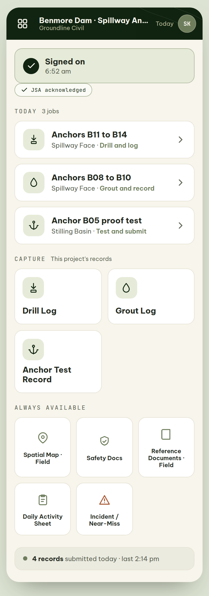
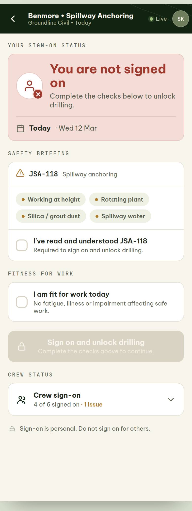
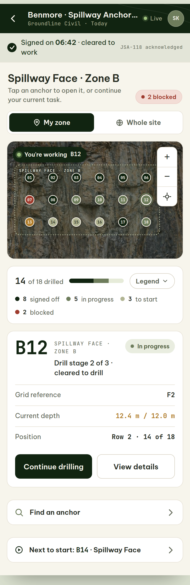
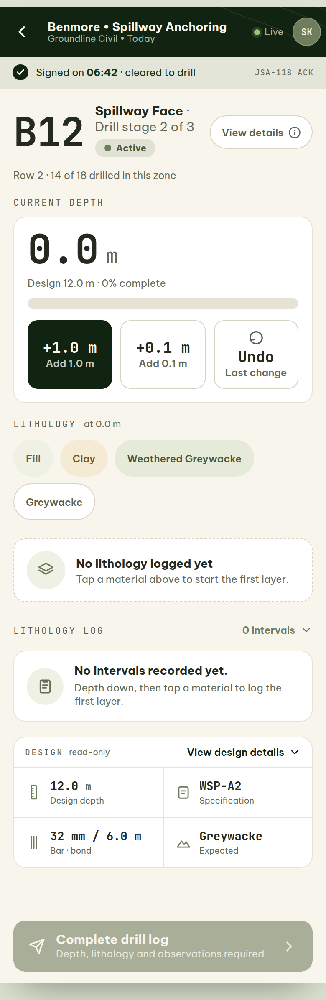
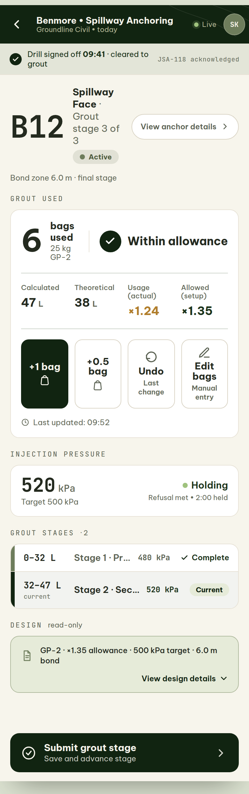
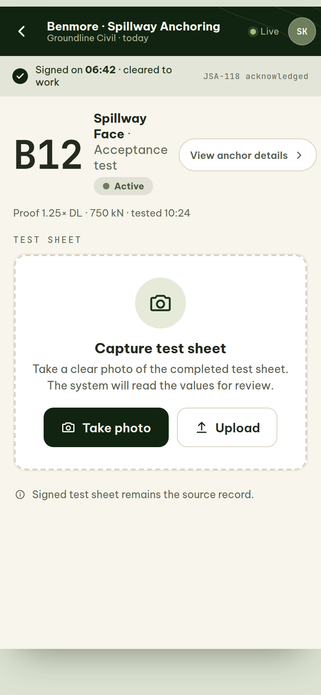

Related PD IDsSOS, DRL, GRT, TST, DAS, INC, SAF, SPM
Prototype fidelityHIGH-FIDELITYSIMULATED
Core operator principleThe operator should primarily confirm and record what physically varies and what they observe. Project-design decisions are front-loaded into setup. The field surface is built for gloves, sun and poor connectivity.
A · Workflow at a glance
OperatorSign onCrew Sign-On
→
OperatorLocateSpatial Map (field)
→
OperatorCaptureDrill → Grout → Test
→
OperatorDeclareIncident / redrill where needed
→
OperatorSubmitFor QA
B · Step-by-step (anchoring path)

Field Homescreens/field-home.htmlHIGH-FIDELITYSIMULATED · The operator’s day at a glance; sign-on gate.

Crew Sign-Onscreens/crew-sign-on.htmlHIGH-FIDELITYSIMULATED · Individual, attributable sign-on and clearance.

Spatial Map · Fieldscreens/spatial-map-operator.htmlHIGH-FIDELITYSIMULATED · Locate and identify the exact work item.

Drill Logscreens/drill-log.htmlHIGH-FIDELITYSIMULATED · Record the actual drilling — depth, lithology, observations.

Grout Logscreens/grout-log.htmlHIGH-FIDELITYSIMULATED · Count bags; the system computes grout variance.

Anchor Test Recordscreens/anchor-test.htmlHIGH-FIDELITYSIMULATED · AI proposes from the test sheet photo; the operator verifies and commits.
Safety Docsscreens/safety-docs.htmlHIGH-FIDELITYSIMULATED · Read and acknowledge the active JSA / SWMS.
C · Outcome
Each capture produces a stage record owned by the operator while In progress, then submitted to the PM for QA. Ownership passes to the PM on submission. In the prototype, capture screens are the most mature area; save and submit change local state only.
D · Where the prototype tests the principle
The Anchor Test screen embodies “AI proposes, a human approves, then it commits”. The Grout Log embodies “calculate the variance; declare the judgement call”. No screen was found that pushes project-design decisions onto the operator, which is consistent with the principle. The chief weakness is that offline behaviour is asserted, not demonstrated.